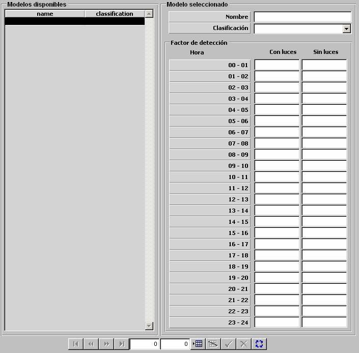

Tabla Horaria

Mediante la Tabla Horaria se especifican para cada intervalo de hora del día (24 intervalos, de 00 ‑ 01 a 23 ‑ 24), el Factor de Detección visual sin luces y con luces. Estos parámetros son tenidos en cuenta para el cálculo de los alcances de los sensores optrónicos, de modo que el parámetro Visibilidad de la zona ambiental (ver apartado Condiciones Ambientales) es multiplicado por el Factor de Detección correspondiente según la hora del ejercicio y teniendo en cuenta que el posible contacto tenga o no las luces encendidas.
Factor – Detección, Con Luces / Sin Luces, Hora 00 – 01, ... , Hora 23 – 24:
Unidades: ---
Rango: 0,000 – 1,000